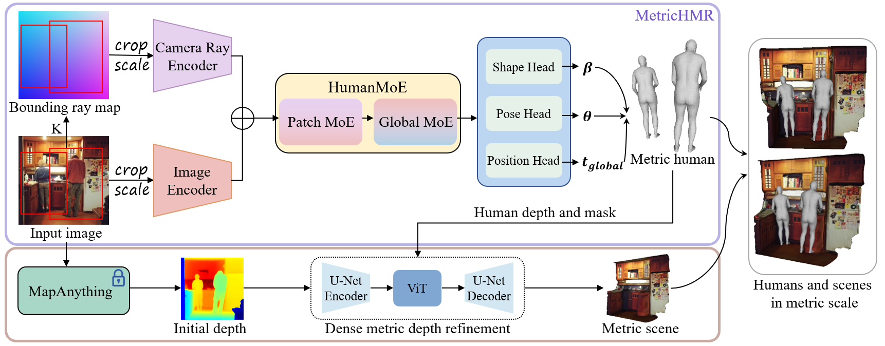
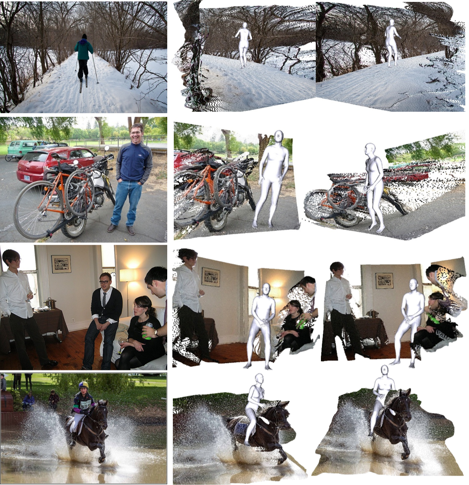
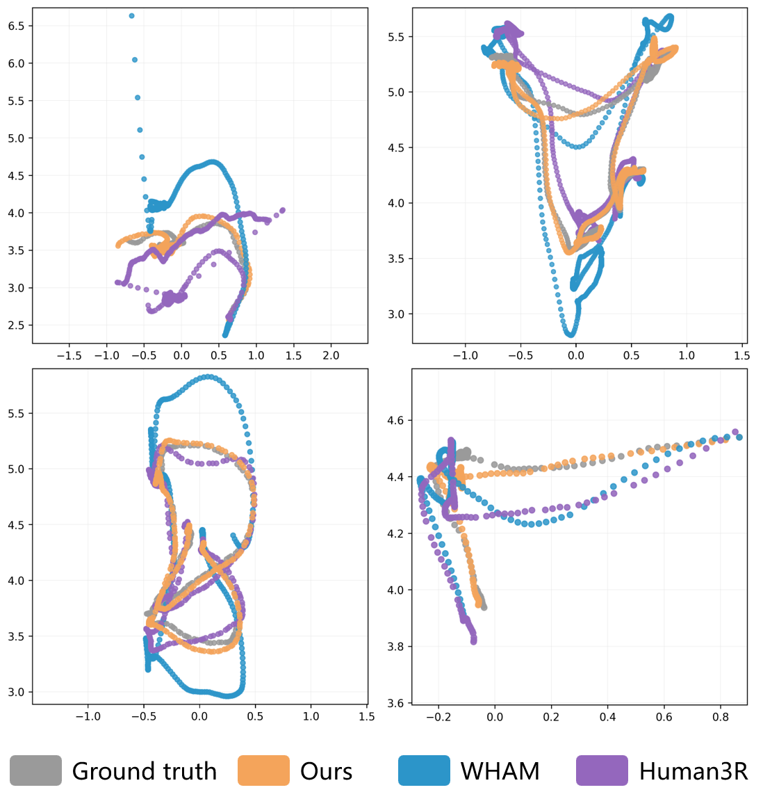

Bounding Ray Map
A pixel-aligned camera representation that encodes camera intrinsics, human image position, and the effects of cropping and scaling, providing explicit metric cues for reconstruction.
We introduce MetricHMSR, a framework for recovering metric human meshes and 3D scenes from a single monocular image. Existing methods struggle with metric scale due to monocular ambiguity and weak-perspective assumptions, and their fully coupled feature representations make it difficult to disentangle local pose from global translation. To address this, MetricHMR incorporates a bounding camera ray map to provide explicit metric cues for human reconstruction, together with a Human Mixture-of-Experts (HumanMoE) that dynamically routes image features to specialized experts for disentangled perception of local human pose and global metric position. Leveraging the recovered metric human as a geometric anchor, MetricHMSR further refines monocular metric depth estimation to achieve more accurate 3D alignment between humans and scenes.

Overall pipeline of MetricHMSR.
MetricHMSR consists of two components: MetricHMR for metric human mesh recovery, and a human-guided metric depth refinement module for scene reconstruction.
Given a cropped human image and the corresponding bounding ray map, the model predicts SMPL pose, shape, and global translation. The recovered metric human is then used as a geometric anchor to refine monocular metric depth and produce more physically consistent human-scene reconstruction.
A pixel-aligned camera representation that encodes camera intrinsics, human image position, and the effects of cropping and scaling, providing explicit metric cues for reconstruction.
A Patch MoE and Global MoE jointly capture patch-level and image-level information, enabling feature-level disentanglement between local pose and global metric position.
The reconstructed metric human serves as a geometric anchor to refine monocular metric depth, improving human-scene alignment and metric consistency.

Metric human-scene reconstruction. Qualitative examples of recovered human meshes aligned with reconstructed scenes.
Temporal consistency of MetricHMR. Video results showing stable metric shape and global position over time.

Trajectory consistency. Frame-wise reconstructions yield coherent global motion trajectories across time.

Depth refinement results. Human-guided refinement improves metric scene depth and human-scene alignment.
@misc{song2025metrichmsrmetrichumanmeshscene,
title={MetricHMSR:Metric Human Mesh and Scene Recovery from Monocular Images},
author={Chentao Song and He Zhang and Haolei Yuan and Haozhe Lin and Jianhua Tao and Hongwen Zhang and Tao Yu},
year={2025},
eprint={2506.09919},
archivePrefix={arXiv},
primaryClass={cs.CV},
url={https://arxiv.org/abs/2506.09919},
}